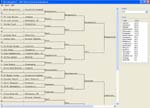
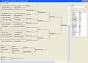
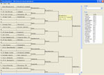
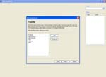
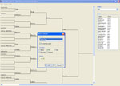
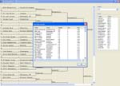
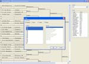
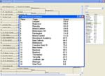
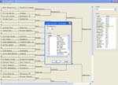

Wrestling Nerd is designed to help manage wrestling tournaments. It features a simple point and click interface for advancing wrestlers in a tournament. Scores are automatically calculated based on win types as the tournament progresses. The program prints brackets, bouts, scores, and place winners. It also performs a number of queries like fastest fall times, the number of bouts, and individual wrestler statistics.
Wrestling Nerd is Open Source Software. Program binaries and source code can be downloaded and used according to the terms of the MIT License.
I've moved the Wrestling Nerd homepage to my own personal domain from SourceForge and the code to GitHub where my other projects reside. You can still download Wrestling Nerd for free as always using the link below.
I've also started a Wrestling Nerd Google Group you can join to ask questions of myself and other WNerd users. Please join to ask your questions and post ideas so others can benefit from the discussion.
I am considering writing a new, paperless and wireless version of the software that can run on Windows, Mac, or Linux right in your web browser without an Internet connection during the tourney. Please post to the Google Group if you have an interest in such an update.
Wrestling Nerd 3.2 has the following features:
The following are screen captures of various parts of Wrestling Nerd. Hover the mouse cursor over one of the thumbnail images to get more information about what is depicted in the image. Click a thumbnail to view a full size version of the image. Depending on your browser, you may need to click a resize button to see the full size image properly when it appears.
        Wrestling Nerd 3.2 is available for download. Click the link for the version of Wrestling Nerd appropriate for your computer. Clicking the link will take you to the SourceForge download page. The download should start a few seconds after visiting the page.
After downloading, please see the documentation for assistance on installing and using Wrestling Nerd.
The source code for Wrestling Nerd is available on GitHub.
The latest documentation is for Wrestling Nerd 3.2. Click here to view the documentation.
The Wrestling Nerd Google Group is the best place to ask for help, discuss ideas, or generally talk about the software. When joining the group, you can elect to receive email as people post or keep your inbox clean and simply browse the group on the web.
To report bugs, visit the issue tracker on GitHub. Use the search box to make sure the bug you are reporting is not already known. Click the Create issue button on that page to enter a new problem report.
The author of Wrestling Nerd, Peter Parente, may be reached by email at parente@cs.unc.edu. More information about the author is available on his blog http://mindtrove.info.